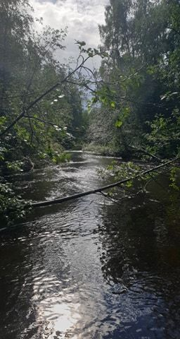

Blogitekstit · Heinäkuu 2020
Katkennut vapa, rankkasade ja lahjaperho

Harjus jäi lapista saamatta ja Ilomantsissa ei hirveästi
harjusta ole, mutta Enossa virtaava Kuusoja kuhisee niitä. Voisinko sieltä
napata mittaharrin? Vaihdoin ajatuksia Joensuun Kalamaratonissa tutuksi tulee
Matti Pasasen kanssa, joka nykyään on yrittäjänä ja vetää Kalastusretket nimistä yritystä.
Matti suositteli, että ottaisin suunnaksi Lieksan ja sieltä Pudasjokea tai Tuulijokea, näistä voisi mitallisen harrin napata helpommin kuin Kuusojalta. Minua kuitenkin houkutti Kuusojan läheisyys ja 35 cm harjuksen alamitta, joka oli huomattavasti alhaisempi kuin Matin mainitsemilla joilla.
Kuusojan potentiaali jalokalojen kotina on uskomaton, lähes kristallinkirkas vesi ja melkein kauttaaltaan soraa ja kiveä täynnä oleva pohja antaa potentiaalia, vaikka mihin. JOS Pielisjoki olisi vapaa, olisi tämä joki varmasti taimenten lisääntymispuro.
Nyt puron asuttaa harjukset ja niitä riittää.
Keli näyttää uhkaavalta, kun ajelen Enon läpi, muutama sadepisara kopsahtaa ikkunaan. Kuusojantie, tästä vasemmalle ja kohti junarataa. Radan kohdalta kääntyy tie vasemmalle ja sen varrelle saan auton parkkiin. Kamat kasaan, jätän virvelin suosiolla autoon ja lähden säheltämään perhovälineillä.
Ensimmäinen kalastuskohta on radan yläpuolinen mutka, tässä on varmaan yksi joen kalastetuimpia monttuja. Heitän pienen perhon veteen ja sitä tukistetaan saman tien. Harri, hieman liian pieni. Koukusta irti ja perho pyyntiin. Monttu on selvästi pienien koti, yksi vuosiaita poikasia nousee jatkuvasti ja päätän lopettaa kohdan kalastamisen.
Illalla uusi yritys jos muualta ei nappaa.
Junaradan alle päästyäni taivas aukenee, ensimmäinen sadekuuro on onneksi lyhyt eikä kastele takkia läpi.
Kahlailen halki matalien osuuksien ja rämmin läpi pusikoiden. Kaloja on selvästi rytöjen alle syöpyneissä montuissa ja niiden edessä.
34 cm, nyt on jo lähellä mitallista. Olen ymmärtänyt viimein, millaisista paikoista kalat löytyvät. Nousen rannalle ja kuuluu naps, vavan kärki katkeaa. Pikaensiapu, pieni viilto ylimmän lenkin yläpuolella ja katkennut nysä pois.
Kai tällä pystyy jatkamaan monttujen koluamista, ei se suurempaa heittämistä vaadi?


Saavun isolle suvannolle, joka kaartaa oikealle,
vastarannalla alavirrassa on mökki, joten päätän jäädä tähän. Hetken
kalastamisen jälkeen jaloissa molahtaa, suurempi noin parin kilon hauki jahtaa
pienempää rannan tuntumassa. Ehkä reviiristä on kilpailu menossa, monttu
kuhisee kaloja mitä jahdata.
Heittelen kaatuneen puun juureen ja saan napattua pieniä harjuksia, yhteen harjukseen näistä kahdesta hauesta se pienempi iskee kiinni saaden siitä itselleen maukkaan aamupalan.
Puiden latvat alkavat heilua, kohta sataa. Sieltä se saapui, ukkoskuuron reuna, jonka pienen hetken kestänyt rankkasade kastelee minut läpikotaisin.
Lähden rämpimään metsän läpi kohti autoa. Kierrän talon metsän puolelta päästen tielle, junaradan äänet kuuluvat edestä. Suunta on siis oikea.
Kamat takaboxiin ja evästä naamaan.
Ajan auton Kuusojan tielle, kello lähenee yhtä. Kalastelen sillan ylä- ja alapuolelta saaden noin 30 cm harjuksia useita. Kahlaan matalan osuuden läpi ja nousen penkalle, kahden rydön välissä näen kalan pohjalla. Seuraan hetken kalaa suojassa ja viritän haaviin lisää pituutta.
Pintaperhon onnistun tiputtamaan virtaan ja se kulkee suoraan kalan näkökenttään, kala kääntää päätään eikä huoli tarjottua perhoa.
Taas se kävi nappaamassa jotain pinnasta.
Vaihdan Teemu Huovisen sitoman karvahäntäpupan tai larvan siiman päähän ja alan larvastaa tai lirkkiä, mikä lie oikea termi tälle täsmä perhostukselle. Perho kulkee virrassa ja kala käy nappaamassa, ei tärppiä. Uusi yritys, nyt kala vain kääntää päätä eikä kiinnostu sen enempää.
Missasinko tämän kalan, mietin mielessäni.
Uusi yritys, nyt kala tukistaa perhoa kunnolla. Saan pidettyä katkenneesta vavan kärjestä huolimatta siiman kireällä ja kala sujahtaa haavinpohjalle.

JESH, lasken haavin ja kalan märälle mättäälle ja kaivan
mitan. Keltainen, hieman ruosteessa oleva mittanauha purkautuu kopan sisältä;
30, 35, 37 cm siihen se kalan pyrstön kohdalla pysähtyy.
Yksi hieno nyanssi ennätyksen rikkovassa kalassa on se, että perho millä kalan pyysin on saatu kiitoksena oppaana toimimisessa Jerelle ja Teemulle. Nappaa heidät seurantaan Instagramissa.
Mietin hetken tapahtunutta ja mennyttä vuotta, 53 kalalajia suusta koukutettuna jo nyt ja vuotta on jäljellä 174 päivää.
Yritän lähettää kuvaviestejä eteenpäin siinä onnistumatta, laitan tekstarit vaimolleni ja soitan perään. Soitan myös Timille kertoakseni, että se on siinä.
Seuraavat kalareissu joita mietin ovat;
- Loimijoki sulkava + toutain (Lempäälä)
- Pohjoinen rautu + kirjoeväsimppu
- Märket turska ja teisti
Kaikkihan on ajasta ja rahasta kiinni mitkä touteutuu ja mitä ei...

Seuraa ennätyksen etenemistä
Pidän kirjaa lajilistasta ja tarkemmasta retkidatasta Google -taulukossa, joka löytyy jokaisesta ennätysyrityksen postauksesta.Tästä linkistä taulukko avautuu uuteen ikkunaan.
Seurantatilanne löytyy myös blogini oikeasta yläreunasta.
Vuoden aikana ennätysyrityksessä kulkee mukaan myös tämä kalataitelija-graaffikko Sakke Yrjölän suunnittelema SPECIES FIN 53 -merkki.
Paitakulmassa painatin pipoon ja lippikseen saman merkin. Tavoitteeni on saada aikaiseksi 53 saaliskuvaa tekstin alussa tekemääni taulukkoon joissa kaikissa kuvissa näkyisi tuo kyseinen tunnus.
Paitakulma on Suomalainen perheyritys, joka haluaa panostaa laatuun ja asiakastyytyväisyyteen. Tutustu yrityksen palveluihin tästä.